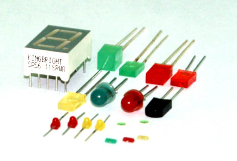

1.6.1. Общая характеристика оптоэлектронных приборов
Оптоэлектронными называют приборы, которые чувствительны к электромагнитному излучению в видимой, инфракрасной и ультрафиолетовой областях, а также приборы, производящие или использующие такое излучение.
Работа оптоэлектронных приборов основана на электронно-фотонных процессах получения, передачи и хранения информации.
Излучение в видимой, инфракрасной и ультрафиолетовой областях относят к оптическому диапазону спектра. Обычно к указанному диапазону относят электромагнитные волны с длиной от 1 нм до 1 мм, что соответствует частотам примерно от 0,5*1012 Гц до 5*1017 Гц. Иногда говорят о более узком диапазоне частот — от 10 нм до 0,1 мм (5*1012... 5*1016Гц). Видимому диапазону соответствуют длины волн от 0,38 мкм до 0,78 мкм (частота около, но меньше 1015 Гц).
На практике широко используются источники излучения (излучатели), приемники излучения (фотоприемники) и оптроны (оптопары).
Из источников излучения нашли широкое применение светодиоды и лазеры, а из приемников — фоторезисторы, фотодиоды, фототранзисторы и фототиристоры. Широко используются оптроны, в которых применяются пары светодиод-–фотодиод, светодиод–фототранзистор, светодиод–фототиристор.
Все приборы оптоэлектроники делят на следующие классы:
- Для преобразования света в электрический ток — фоторезисторы, фотодиоды, фототранзисторы, фототиристоры, пироэлектрические приёмники, приборы с зарядовой связью (ПЗС), фотоэлектронные умножители (ФЭУ).
- Для преобразования тока в световое излучение — электролюминесцентные индикаторы, полупроводниковые светодиоды и лазеры (газовые, твердотельные, полупроводниковые).
- Для изоляции электрических цепей (последовательного преобразования «ток-свет-ток») служат отдельные устройства оптоэлектроники — оптопары – резисторные, диодные, транзисторные, тиристорные, оптопары на одно-переходных фототранзисторах и оптопары с открытым оптическим каналом.
- Для применения в различных электронных устройствах служат оптоэлектронные интегральные схемы — интегральные микросхемы, в которых осуществляется оптическая связь между отдельными узлами или компонентами с целью изоляции их друг от друга (гальванической развязки).
Основные достоинства оптоэлектронных приборов:
- высокая информационная емкость оптических каналов передачи информации, что является следствием больших значений используемых частот;
- полная гальваническая развязка источников и приемников излучения;
- отсутствие влияния приемника излучения на источник (однонаправленность потока информации);
- невосприимчивость оптических каналов к электромагнитным полям (высокая помехозащищенность).